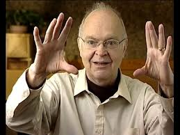
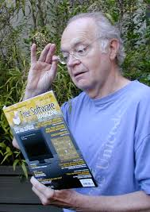
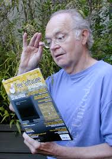

American Computer Scientist and Mathematician
 

Short Story
Donald Ervin Knuth is considered one of the world's leading computer scientists and mathematicians. Yet in high school, Knuth found mathematics uninspiring. Although he achieved the highest grade-point average in the history of his high school, Knuth doubted his ability to succeed in college mathematics; and so did his advisor. So when Knuth graduated from high school in 1956, he entered the Case Institute of Technology (now Case Western Reserve) in Cleveland, Ohio, on a physics scholarship.
Knuth was born in Milwaukee, Wisconsin, to German-Americans Ervin Henry Knuth and Louise Marie Bohning.[5] His father had two jobs: running a small printing company and teaching bookkeeping at Milwaukee Lutheran High School.[6] Donald, a student at Milwaukee Lutheran High School, received academic accolades there, especially because of the ingenious ways that he thought of solving problems.[6] For example, in eighth grade, he entered a contest to find the number of words that the letters in "Ziegler's Giant Bar" could be rearranged to create. Although the judges only had 2,500 words on their list, Donald found 4,500 words, winning the contest. As prizes, the school received a new television and enough candy bars for all of his schoolmates to eat.